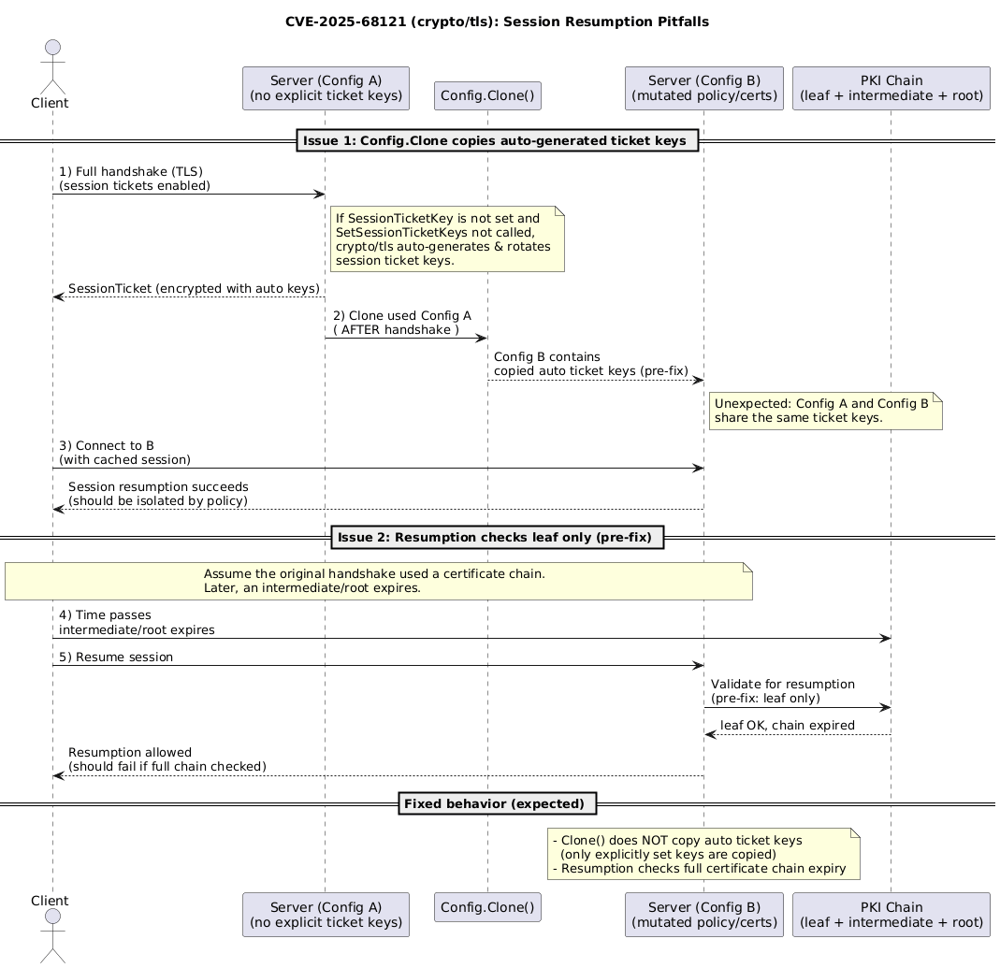
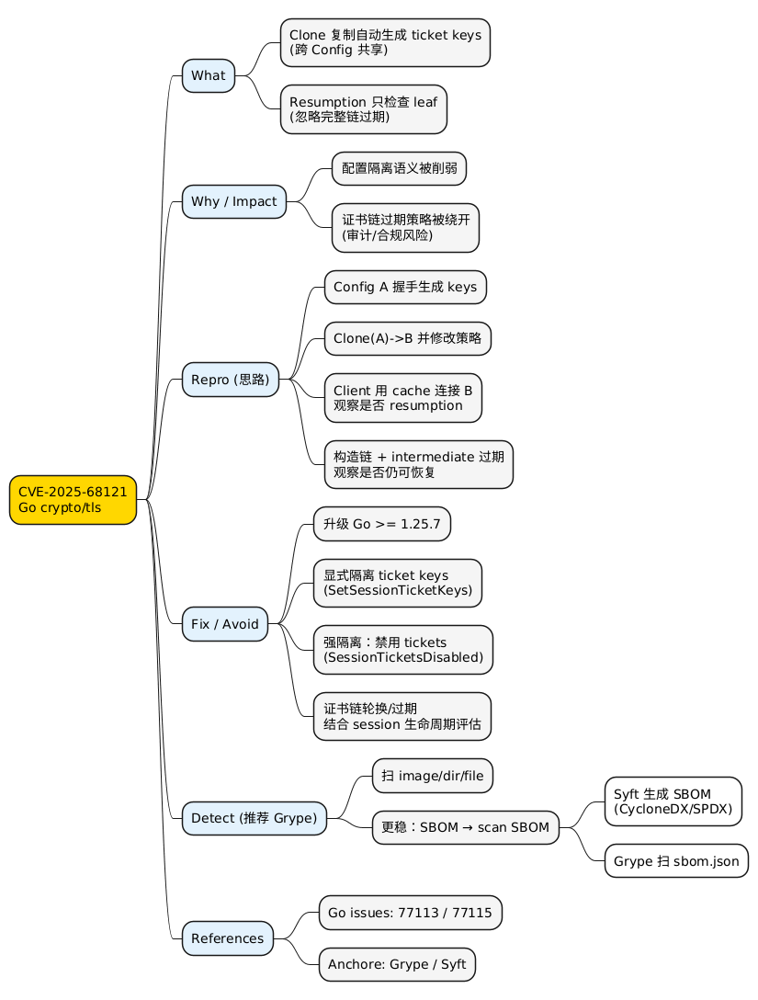

Go crypto/tls Config.Clone session resumption pitfalls (CVE-2025-68121)
Posted on 三 25 2月 2026 in Tech
| Abstract | Go crypto/tls Config.Clone session resumption pitfalls (CVE-2025-68121) |
|---|---|
| Authors | Walter Fan |
| Category | tech note |
| Status | v1.0 |
| Updated | 2026-02-25 |
| License | CC-BY-NC-ND 4.0 |
Go crypto/tls: Config.Clone + Session Resumption 的安全坑（CVE-2025-68121）
What
这次问题可以拆成两段（都和 session resumption 有关）：
Config.Clone意外复制自动生成的 session ticket keys- 如果你没显式设置
Config.SessionTicketKey，也没调用过Config.SetSessionTicketKeys，Go 的crypto/tls会在服务器侧自动生成并轮换 session ticket keys。 -
在修复前，
Config.Clone()会把这些自动生成的 keys 也复制到新 Config 里，导致两个 Config 共享同一套 ticket keys。 -
服务端恢复会话时未考虑完整证书链过期
- 在修复前，服务端在决定一个会话是否能恢复时，只检查了（当初握手时）叶子证书（leaf）的过期情况。
- 如果证书链里的中间证书/根证书过期，仍可能发生 session resumption。
这两个点来自 Go issue：CVE-2025-68121 / crypto/tls issue #77113。
Why（危害在哪里）
1) “配置隔离”失效：票据 key 共享导致跨 Config 恢复
在很多工程里，大家会自然把不同的 tls.Config 当作“隔离边界”：
- 不同端口 / 不同虚拟主机 / 不同租户
- 不同的 TLS 策略（cipher suites、最小版本、ClientAuth 之类）
- 不同的证书链（甚至不同的 CA/中间证书组合）
如果这些 Config 因为 Clone() 而共享了自动生成的 session ticket keys，那么：
- 某个 Config 下签发出来的 session ticket，另一个 Config 也可能解得开并接受恢复
- 你以为的“按 Config 切分的 session resumption 边界”，可能就被悄悄抹平了
这类 bug 最危险的地方在于：它不会让 TLS 直接报错，很多时候只会让“本来不该发生的恢复”悄悄发生。
2) 证书链过期策略被绕开：过期中间证书/根证书下仍可恢复
证书过期本来是 PKI 的硬边界：过期就应当失败。
如果 session resumption 在服务端只看 leaf，而不看完整链条，那么链条里某些关键证书（中间证书/根证书）过期后，会话可能仍被恢复：
- 不符合你对证书生命周期的预期
- 在合规/审计语境下会很尴尬：证书链都过期了，连接却“看起来还能用”
How（如何重现）
下面给一个“最小复现思路”。它不是为了写出最短代码，而是为了把触发条件说清楚。
复现 1：Clone() 后不同 Config 共享 session ticket keys
前提：
- 服务端使用
tls.Config，但不显式设置SessionTicketKey，也不调用SetSessionTicketKeys（让 Go 自动生成 ticket keys） - 先用 Config A 跑过一次握手（触发自动生成 keys）
- 然后对 Config A 调用
Clone()得到 Config B
步骤（概念版）：
- 用 Config A 启一个 TLS server（端口 8443）
- 客户端连接一次，拿到 session（客户端开启
ClientSessionCache） - 服务端对“已经用过的 Config A”做
Clone()得到 Config B，并用 Config B 再起一个 TLS server（端口 9443），同时让 Config B 改一些你希望隔离的策略（例如不同的ClientAuth/ 不同的证书链等） - 客户端改连 9443，并尝试 session resumption（同一个
ClientSessionCache） - 在修复前，你可能会观察到：在你以为“换了 Config/换了策略”后，session 仍然被恢复
示例代码骨架（只展示关键点）：
// 关键点：
// - serverConfigA 不设置 SessionTicketKey / 不调用 SetSessionTicketKeys
// - 先让 A 被用过（完成一次握手）
// - 再 Clone() 得到 B
// - client 使用 ClientSessionCache，第二次连接时才可能 resumption
复现 2：完整证书链过期不生效（服务端仍恢复会话）
这个复现更依赖证书链构造（比如让一个 intermediate 在较短时间内过期），思路是：
- 构造一条包含中间证书的链（leaf + intermediate + root）
- 建立一次握手并让客户端拿到可恢复的 session
- 等 intermediate（或 root）过期
- 再次连接，观察服务端是否仍允许 session resumption
在修复前，服务端可能只检查 leaf 的有效期，从而忽略链条的过期。
How（如何修复与避免）
官方修复（建议优先做）
根据 issue 描述，Go 的修复点包括：
Config.Clone不再复制自动生成的 session ticket keys（但仍会复制你显式提供的 keys）- 服务端 session resumption 判断时，把完整证书链的过期纳入考虑
最直接的建议就是：升级 Go 版本到 Go 1.25.7 以上（或更高版本线中已包含该修复的版本）。这一点可以从 Go 的 backport issue 里看到该修复被纳入 1.25 分支发布节奏（见 References）。
在升级前的规避手段（工程侧能做的）
- 不要把“自动生成的 ticket keys”当作隔离边界
-
如果你有多个
tls.Config，并且希望它们的 session resumption 互相隔离：请显式设置各自的 ticket keys。 -
显式管理 session ticket keys（并且按 Config 做隔离）
- 用
Config.SetSessionTicketKeys(...)或Config.SessionTicketKey（如你项目仍在用）显式配置 keys，并确保不同 Config 不共享同一套 keys。 -
如果你确实想共享（比如多实例要共享会话恢复能力），那就共享得“明明白白”，并把风险写进设计文档。
-
需要强隔离时，直接禁用 session tickets
-
对安全边界敏感的场景，可以设置
Config.SessionTicketsDisabled = true，用一次完整握手换取更清晰的隔离语义。 -
把证书链生命周期纳入你的“会话恢复策略”
- 如果你对证书链过期非常敏感，建议在升级前先评估：是否需要主动缩短会话票据有效窗口、或在证书链轮换时主动失效旧 session（否则 resumption 的行为很难按“证书过期”直觉推断）。
检测：如何检查 image / binary 是否包含 CVE-2025-68121
除了“升级 Go”，你通常还需要回答另一个更落地的问题：我的 Docker image / 线上二进制，到底有没有带着这个 CVE？
下面是几种常见工具的对比（按你给的表整理）：
| Tool | Detects CVE-2025-68121 | Works on binary | Notes |
|---|---|---|---|
| Trivy | ✔ | ✔ | 容器/文件系统/二进制都常用，生态最广 |
| Grype | ✔ | ✔ | 覆盖面广，扫 image/dir/SBOM 都顺手 |
| CVE Binary Tool | 👍 | ✔ | 对 Go runtime 的覆盖相对有限，更多场景是“能扫但不一定准” |
| govulncheck | ✔ | ❌ | 更适合扫源码/依赖（source code analysis），不是拿来扫产物的 |
| Manual Version Check | ✔（heuristic） | ✔ | 看 binary 里嵌入的 Go 版本号，简单但不绝对 |
你说实际用下来更推荐 Grype，用它适合作为 CI / 镜像发布前的“守门员”。
Grype 介绍与用法（我推荐）
Grype 是 Anchore 开源的漏洞扫描器，主打 container images / filesystems / SBOMs（三类目标都能扫）。项目主页见：https://github.com/anchore/grype。
1) 安装
官方安装方式里，我常用这两个（macOS/CI 都顺手）：
# 官方安装脚本（Linux/macOS/Windows）
curl -sSfL https://get.anchore.io/grype | sudo sh -s -- -b /usr/local/bin
# Homebrew（macOS）
brew tap anchore/grype
brew install grype
2) 最常用：扫 Docker image
# 扫本地 docker daemon 里的 image
grype alpine:latest
# 直接从 registry 拉（不依赖本地容器运行时）
grype registry:yourrepo/yourimage:tag
常用参数（更适合 CI）：
# 只看有修复版本（fixed）的漏洞，降低噪音
grype yourimage:tag --only-fixed
# 输出为 table/json/sarif 等
grype yourimage:tag -o table
grype yourimage:tag -o json
# 若发现 >= high 的漏洞，直接让命令返回非 0（用于 CI 阻断）
grype yourimage:tag --fail-on high
3) 扫目录 / 扫单个文件（二进制）
# 扫目录
grype dir:/path/to/rootfs
# 扫单个文件（比如某个可执行文件）
grype file:/path/to/your-binary
说明：
- 对“二进制”的识别能力，取决于 Grype 的包识别与数据库匹配能力；在很多团队里，更稳的路线是 先出 SBOM，再扫 SBOM（见下一节）。
这里的 SBOM 是 Software Bill of Materials，可以理解成“软件物料清单”：把一个镜像/文件系统/构建产物里包含的组件（OS 包、语言依赖、版本、PURL/CPE 等标识）结构化列出来。
先生成 SBOM 再做漏洞匹配，通常更稳、更快，也更容易在 CI 里复现与对比（你扫的目标不再是“某个不可见的文件集合”，而是一份明确的清单）。
一个极简的 SBOM 长这样（以 CycloneDX JSON 为例，真实文件会更长）：
{
"bomFormat": "CycloneDX",
"specVersion": "1.5",
"version": 1,
"metadata": {
"component": {
"type": "container",
"name": "example/app",
"version": "1.0.0"
}
},
"components": [
{
"type": "library",
"name": "golang.org/x/crypto",
"version": "v0.18.0",
"purl": "pkg:golang/golang.org/x/crypto@v0.18.0"
},
{
"type": "library",
"name": "github.com/anchore/grype",
"version": "v0.104.1",
"purl": "pkg:golang/github.com/anchore/grype@v0.104.1"
}
]
}
4) 更稳更快：扫 SBOM
先说“怎么生成 SBOM”。我推荐用 Syft（同样是 Anchore 的工具），它能对 image / dir / file 生成多种格式的 SBOM，最常见的是 CycloneDX 和 SPDX。
# 安装 Syft（官方脚本）
curl -sSfL https://get.anchore.io/syft | sudo sh -s -- -b /usr/local/bin
# macOS 也可以用 Homebrew
brew install syft
# 1) 给镜像生成 SBOM（CycloneDX JSON）
syft yourimage:tag -o cyclonedx-json=sbom.json
# 2) 给目录/rootfs 生成 SBOM
syft dir:/path/to/rootfs -o cyclonedx-json=sbom.json
# 3) 给单个二进制生成 SBOM
syft file:/path/to/your-binary -o cyclonedx-json=sbom.json
生成出来的 sbom.json 再交给 Grype 扫：
# 直接扫一个 Syft JSON（SBOM）
grype sbom:./sbom.json
# 或者把 SBOM 从 stdin pipe 进去
cat ./sbom.json | grype
5) 一些我常用的“非必需但好用”的参数
# 结果尽量按 CVE 聚合（能转成 CVE 时）
grype yourimage:tag --by-cve
# 扫全层（all-layers）而不只是 squashed（更严格，但结果可能更多）
grype yourimage:tag --scope all-layers
# 对缺 CPE 的包尝试生成 CPE（有时能补齐匹配）
grype yourimage:tag --add-cpes-if-none
# 更新 vulnerability DB（排查“为啥扫不出某个 CVE”时很有用）
grype db update
时序图：CVE-2025-68121 的触发流程（概念图）
@startuml
title CVE-2025-68121 (crypto/tls): Session Resumption Pitfalls
actor Client
participant "Server (Config A)\n(no explicit ticket keys)" as SrvA
participant "Config.Clone()" as Clone
participant "Server (Config B)\n(mutated policy/certs)" as SrvB
participant "PKI Chain\n(leaf + intermediate + root)" as Chain
== Issue 1: Config.Clone copies auto-generated ticket keys ==
Client -> SrvA: 1) Full handshake (TLS)\n(session tickets enabled)
note right of SrvA
If SessionTicketKey is not set and
SetSessionTicketKeys not called,
crypto/tls auto-generates & rotates
session ticket keys.
end note
SrvA --> Client: SessionTicket (encrypted with auto keys)
SrvA -> Clone: 2) Clone used Config A\n( AFTER handshake )
Clone --> SrvB: Config B contains\ncopied auto ticket keys (pre-fix)
note right of SrvB
Unexpected: Config A and Config B
share the same ticket keys.
end note
Client -> SrvB: 3) Connect to B\n(with cached session)
SrvB --> Client: Session resumption succeeds\n(should be isolated by policy)
== Issue 2: Resumption checks leaf only (pre-fix) ==
note over Client,SrvB
Assume the original handshake used a certificate chain.
Later, an intermediate/root expires.
end note
Client -> Chain: 4) Time passes\nintermediate/root expires
Client -> SrvB: 5) Resume session
SrvB -> Chain: Validate for resumption\n(pre-fix: leaf only)
Chain --> SrvB: leaf OK, chain expired
SrvB --> Client: Resumption allowed\n(should fail if full chain checked)
== Fixed behavior (expected) ==
note over SrvB
- Clone() does NOT copy auto ticket keys
(only explicitly set keys are copied)
- Resumption checks full certificate chain expiry
end note
@enduml

思维导图：全文要点（Summary Map）
@startmindmap
<style>
mindmapDiagram {
node { BackgroundColor #FAFAFA }
:depth(0) { BackgroundColor #FFD700 }
:depth(1) { BackgroundColor #E3F2FD }
:depth(2) { BackgroundColor #F5F5F5 }
}
</style>
* CVE-2025-68121\nGo crypto/tls
** What
*** Clone 复制自动生成 ticket keys\n(跨 Config 共享)
*** Resumption 只检查 leaf\n(忽略完整链过期)
** Why / Impact
*** 配置隔离语义被削弱
*** 证书链过期策略被绕开\n(审计/合规风险)
** Repro (思路)
*** Config A 握手生成 keys
*** Clone(A)->B 并修改策略
*** Client 用 cache 连接 B\n观察是否 resumption
*** 构造链 + intermediate 过期\n观察是否仍可恢复
** Fix / Avoid
*** 升级 Go >= 1.25.7
*** 显式隔离 ticket keys\n(SetSessionTicketKeys)
*** 强隔离：禁用 tickets\n(SessionTicketsDisabled)
*** 证书链轮换/过期\n结合 session 生命周期评估
** Detect (推荐 Grype)
*** 扫 image/dir/file
*** 更稳：SBOM → scan SBOM
**** Syft 生成 SBOM\n(CycloneDX/SPDX)
**** Grype 扫 sbom.json
** References
*** Go issues: 77113 / 77115
*** Anchore: Grype / Syft
@endmindmap

Summary
- 问题 1：
Config.Clone复制自动生成的 session ticket keys → 多个tls.Config之间意外共享票据 key → session resumption 的隔离边界被削弱。 - 问题 2：服务端恢复会话只检查 leaf 证书 → 链条中间/根证书过期时，仍可能恢复会话。
- 首选修复：升级到包含 CVE-2025-68121 修复的 Go 版本。
- 工程规避：显式配置并隔离 ticket keys；必要时禁用 session tickets；把证书链过期与 session 生命周期一起考虑。
Checklist
- [ ] 盘点服务端是否调用
Config.Clone()（尤其是对“已用于握手的 Config”做 Clone 的场景） - [ ] 盘点是否依赖多个
tls.Config的“隔离”语义（端口/租户/策略/证书链） - [ ] 是否显式配置了 session ticket keys（
SetSessionTicketKeys/SessionTicketKey），并确保不同 Config 不意外共享 - [ ] 是否需要
SessionTicketsDisabled（安全边界优先的系统） - [ ] 升级 Go 版本并验证：session resumption 行为是否符合预期（含证书链轮换/过期场景）
References
- Go issue #77113: crypto/tls Config.Clone + session resumption (CVE-2025-68121)
- Go issue #77115: CVE-2025-68121 1.25 backport tracking
- Grype (Anchore): vulnerability scanner for images/filesystems/SBOMs
- Installing Grype (Anchore OSS docs)
- Grype CLI reference (Anchore OSS docs)
- Syft (Anchore): SBOM generator
本作品采用知识共享署名-非商业性使用-禁止演绎 4.0 国际许可协议进行许可。